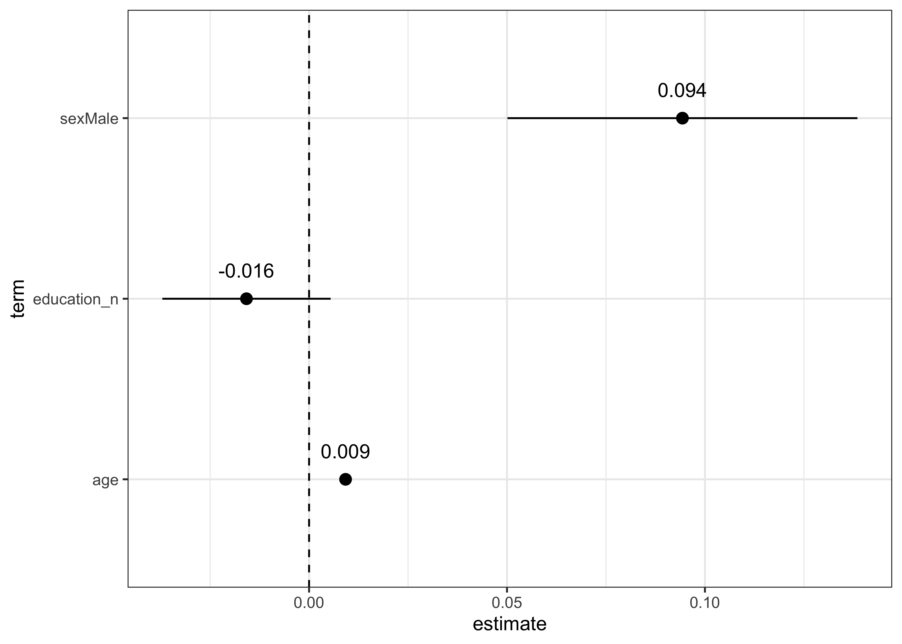
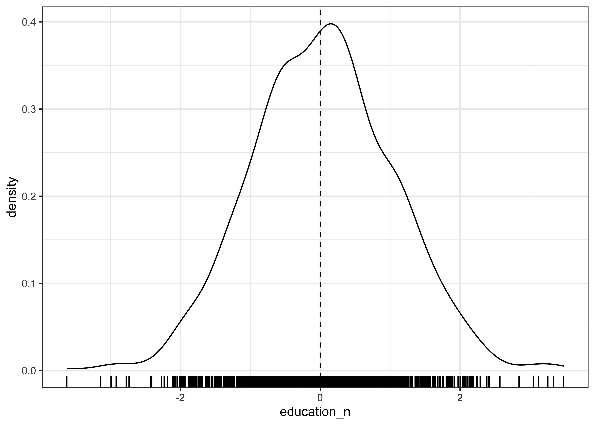
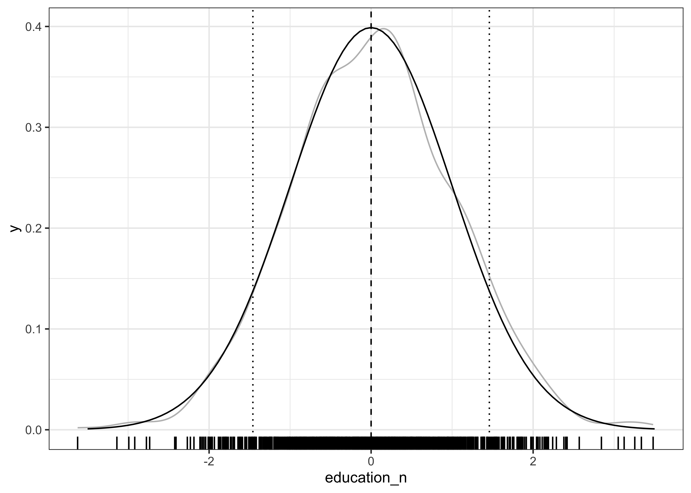
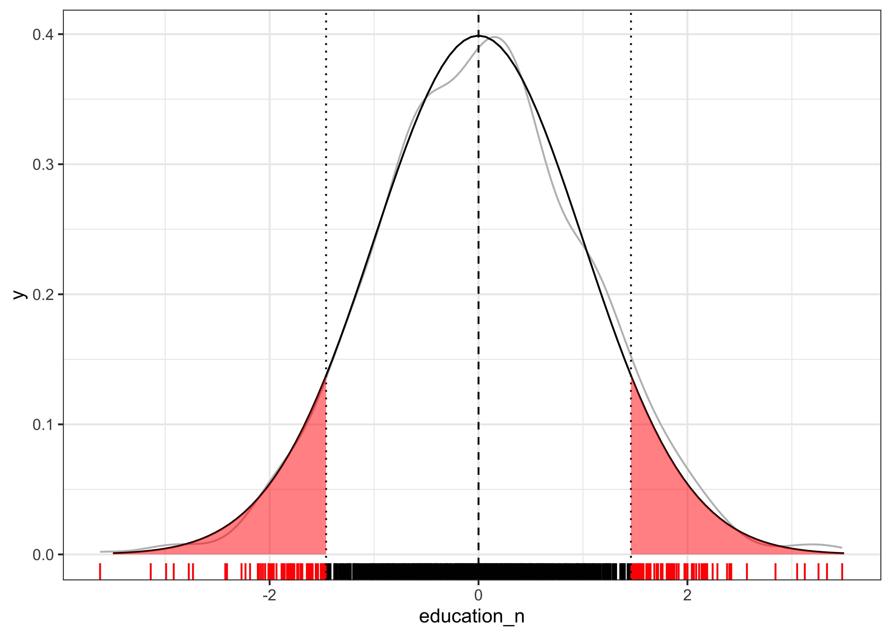
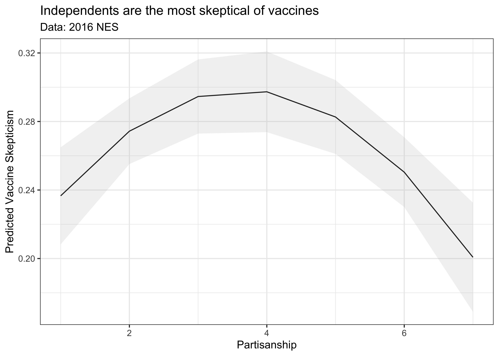

# Uncomment to uninstall package to download NES survey data
# library(devtools)
# install_github("jamesmartherus/anesr")
require(anser)Week 11:
Quantifying Uncertainty with Hypothesis Testing
class: inverse, center, middle # Overview
General Plan
Setup
Review: Confidence Intervals
Lecture : Hypothesis Testing
Demo: Final Projects
Course Plan
April 18: Lecture – Hypothesis Testing
April 20 Lab – Hypothesis Testing and Interval Estimation
April 25: Lecture – Course Review
April 27: Workshop:
April 30: Take Home Final Exam
May ?: Tacos or Pizza with POLS 1140?
May 7: Take Home Final Exam due
class:inverse, middle, center # 💪 ## Get set up to work
New packages
To easily load survey data for our question, we’ll need the anesr package, which loads data from the American National Election Studies into R
Packages for today
the_packages <- c(
## R Markdown
"kableExtra","DT","texreg",
## Tidyverse
"tidyverse", "lubridate", "forcats", "haven", "labelled","purrr",
## Extensions for ggplot
"ggmap","ggrepel", "ggridges", "ggthemes", "ggpubr",
"GGally", "scales", "dagitty", "ggdag", "ggforce",
# Graphics:
"scatterplot3d", #<<
# Data
"COVID19","maps","mapdata","qss","tidycensus", "dataverse",
# Analysis
"DeclareDesign", "modelr", "zoo"
)Define a function to load (and if needed install) packages
ipak <- function(pkg){
new.pkg <- pkg[!(pkg %in% installed.packages()[, "Package"])]
if (length(new.pkg))
install.packages(new.pkg, dependencies = TRUE)
sapply(pkg, require, character.only = TRUE)
}Load packages for today
ipak(the_packages) kableExtra DT texreg tidyverse lubridate
TRUE TRUE TRUE TRUE TRUE
forcats haven labelled purrr ggmap
TRUE TRUE TRUE TRUE TRUE
ggrepel ggridges ggthemes ggpubr GGally
TRUE TRUE TRUE TRUE TRUE
scales dagitty ggdag ggforce scatterplot3d
TRUE TRUE TRUE TRUE TRUE
COVID19 maps mapdata qss tidycensus
TRUE TRUE TRUE TRUE TRUE
dataverse DeclareDesign modelr zoo
TRUE TRUE TRUE TRUE class:inverse, middle, center # 🔍 # Review ## Confidence Intervals
Confidence Intervals
Statistical inference involves quantifying uncertainty about what could have happened
We can describe this uncertainty in terms of a sampling distribution (what could have happened had we had a different sample)
The standard deviation of a sampling distribution describes its width (spread) and is called a standard error
Standard errors decrease with by the \(\sqrt{N}\) where \(N\) is the size of our sample
We can estimate standard errors via simulation or analytically.
Simulations require fewer assumptions, but take more time.
Analytic estimates are are quick, but require more assumptions.
We use standard errors to construct confidence intervals which we interpret as describing a range of plausible values for the thing we’re trying to estimate.
Any one 95% confidence interval may or may not contain the truth, but in repeated sampling, 95% of the intervals we construct would contain the truth.
Standard Errors of Regression Coefficients
Last class, we calculated the standard error of a sample mean using bootstrapping.
We can take the same approach for regression coefficients:
load(url("https://pols1600.paultesta.org/files/data/df_drww.rda"))
# Fit model
m1 <- lm(support_war01 ~ age + education_n + sex, df_drww)
# set seed
set.seed(123)
# 1,000 bootstrap samples
boot <- modelr::bootstrap(df_drww, 1000)
# Estimate Boostrapped Models
m1_bs <- purrr::map(boot$strap, ~ lm(support_war01 ~ age + education_n + sex, data =.))
# Tidy coefficients
m1_bs_df <- map_df(m1_bs, tidy, .id = "id")Bootstrapped Standard Errors
Then we simply calculate the standard error of for the sampling distribution of each coefficient
m1_bs_df %>%
group_by(term)%>%
summarize(
bs_se = sd(estimate)
) -> m1_bs_se
m1_bs_se# A tibble: 4 × 2
term bs_se
<chr> <dbl>
1 (Intercept) 0.0564
2 age 0.000717
3 education_n 0.0108
4 sexMale 0.0223 Analytic Standard Errors.
Alternatively, we can derive the standard error of the sampling distribution analytically using asymptotic theory (e.g. the Central Limit Theorem).
The process starts by defining the quantity we want to know: the variance of our estimated coefficients \(\hat{\beta}\) around their true values in the population \(\beta\):
\[V(\hat{\beta}|X) =(E[(\hat{\beta} - \beta)(\hat{\beta} - \beta)' |X]\]
Your textbook walks through the math to estimate this quantity on pages 375-380 for simple bivariate regression (i.e. a regression with 1 predictor)
In the notes, you’ll find some further discussion of the math for the more general case of with multiple predictors.
This is also an excellent walk through of the linear algebra
Analytic Standard Errors.
Essentially, if you expand terms from:
\[V(\hat{\beta}|X) =(E[(\hat{\beta} - \beta)(\hat{\beta} - \beta)' |X]\]
make substitutions and some assumptions about the distribution of \(\epsilon\), you arrive at a formula for the “Variance Covariance Matrix” of the model:
\[V(\hat{\beta}|X) = \sigma^2(X'X)^{-1}\] Which is a function of
- \(\sigma^2\) the “Sum of Square Errors”
- \((X'X)^{-1}\) roughly captures the underlying variance and covariance of the predictors in your model, where:
- \(X\) is a matrix of predictors (each row is an observation, each column a variable)
- \(X'X\) is a symmetric maxtrix (like squaring a variable, but in linear algerba)
- \(X'X^{-1}\) is the inverse of this matrix
- \(sigma^2(X'X)^{-1}\) is like dividing \(\sigma^2\) by \(X'X\)
Analytic Standard Errors.
The square root of the elements on the diagonal of \(V(\hat{\beta}|X)\) provides the standard error for each coefficient, which is larger if:
- if \(\sigma^2\) is large (When there’s a lot of unexplained variance, our uncertainty is high)
- the variance of \(X\) is small (When predictors don’t vary much our uncertainty increases)
Analytic Standard Errors.
In practice, you will let your computer calculate these standard errors.
summary(m1)$coef Estimate Std. Error t value Pr(>|t|)
(Intercept) 0.277540588 0.0529197543 5.244555 1.797036e-07
age 0.009216952 0.0007129459 12.927982 2.827291e-36
education_n -0.015814493 0.0108357258 -1.459477 1.446491e-01
sexMale 0.094320479 0.0225358310 4.185356 3.017253e-05Analytic Standard Errors by Hand
Just for fun:
# Sum of Squared Residuals
sigma_2 <- sum(resid(m1)^2)/m1$df.residual
# X transpose X
XtXinv <- solve(t(model.matrix(m1))%*%model.matrix(m1))
# SE is square root of diagonal of Variance Covariance Matrix
sqrt(diag(sigma_2*XtXinv)) (Intercept) age education_n sexMale
0.0529197543 0.0007129459 0.0108357258 0.0225358310 summary(m1)$coef[,2] (Intercept) age education_n sexMale
0.0529197543 0.0007129459 0.0108357258 0.0225358310 Constructing Confidence Intervals for Regression Coefficients
Estimate the model to obtain coefficients \(\hat{\beta}\)
Calculate Standard Errors using simulation or asymptotic theory
Choose desired confidence level \(\alpha\) with a corresponding critical value \(z_{\alpha/2}\) derived from an approximation of the hypotehtical sampling distribution
Construct a \((1-\alpha)\times 100 \%\) percent confidence interval:
\[CI(\alpha) = [\hat{\beta} - z_{\alpha/2} \times \text{standard error}, \hat{\beta} + z_{\alpha/2} \times \text{standard error}]\]
- Estimate the model to obtain coefficients \(\hat{\beta}\)
beta <- coef(m1)
beta (Intercept) age education_n sexMale
0.277540588 0.009216952 -0.015814493 0.094320479 - Calculate Standard Errors using simulation or asymptotic theory
se <- summary(m1)$coef[,2]
se (Intercept) age education_n sexMale
0.0529197543 0.0007129459 0.0108357258 0.0225358310 # Similar to bs
m1_bs_se# A tibble: 4 × 2
term bs_se
<chr> <dbl>
1 (Intercept) 0.0564
2 age 0.000717
3 education_n 0.0108
4 sexMale 0.0223 Constructing Confidence Intervals for Regression Coefficients
- Calculate critical value
z_fs <- abs(qt(.05/2, m1$df.residual))
z_fs[1] 1.961591- Note: For finite samples we use a \(t\) distribution…
Constructing Confidence Intervals for Regression Coefficients
ll <- beta - z_fs *se
ul <- beta + z_fs *se
cbind(ll,ul) ll ul
(Intercept) 0.173733660 0.381347516
age 0.007818443 0.010615460
education_n -0.037069758 0.005440772
sexMale 0.050114390 0.138526568# Compare to R:
confint(m1) 2.5 % 97.5 %
(Intercept) 0.173733660 0.381347516
age 0.007818443 0.010615460
education_n -0.037069758 0.005440772
sexMale 0.050114390 0.138526568Presenting Confidence Intervals in a Regression Table:
```{r, results="asis"}`r''`
texreg::htmlreg(m1,
digits = 3,
ci.force = T)
```texreg::htmlreg(m1,
digits = 3,
ci.force = T)| Model 1 | |
|---|---|
| (Intercept) | 0.278* |
| [ 0.174; 0.381] | |
| age | 0.009* |
| [ 0.008; 0.011] | |
| education_n | -0.016 |
| [-0.037; 0.005] | |
| sexMale | 0.094* |
| [ 0.050; 0.138] | |
| R2 | 0.107 |
| Adj. R2 | 0.106 |
| Num. obs. | 1463 |
| * 0 outside the confidence interval. | |
Tidying Regression Models
m1 %>%
tidy(., conf.int = T) -> m1_df
m1_df# A tibble: 4 × 7
term estimate std.error statistic p.value conf.low conf.high
<chr> <dbl> <dbl> <dbl> <dbl> <dbl> <dbl>
1 (Intercept) 0.278 0.0529 5.24 1.80e- 7 0.174 0.381
2 age 0.00922 0.000713 12.9 2.83e-36 0.00782 0.0106
3 education_n -0.0158 0.0108 -1.46 1.45e- 1 -0.0371 0.00544
4 sexMale 0.0943 0.0225 4.19 3.02e- 5 0.0501 0.139 Coefficient Plots as an Alternative to Regression Tables
m1_df %>%
filter(term != "(Intercept)")%>%
ggplot(aes(x = estimate,
y= term,
xmin = conf.low,
xmax = conf.high,
label = round(estimate,3)
))+
geom_pointrange()+
geom_text(vjust=-1.5)+
geom_vline(xintercept = 0, linetype =2)+
theme_bw()
Confidence Intervals: Summary
What is a sampling distribution?
- A distribution of values we would have observed upon repeated sampling
- Bootstrapping (sampling from a sample) approximates the width of the sampling distribution
What is a standard error?
- Standard deviation of the sampling distribution
- Describes the width or range of plausible observations we would see.
- Decreases as the sample size increases
Confidence Intervals: Summary
What is a confidence interval
- Coverage interval for a sampling distribution
- “A confidence interval is a way of expressing the precision or repeatability of a statistic, how much variation would likely be present across the possible different random samples from the population”
- Three components:
- Point Estimate (i.e. a mean, or coefficient)
- Confidence Level (Often 95 percent by convention)
- Margin of Error (+/- some range (typically 2*SD for 95 percent CI))
- Confidence is about the interval
- 95 percent of the intervals construct in this manner would contain the truth.
class: inverse, center, middle # 💡 # Hypothesis Testing ## How likely is it that we would see what did if our hypothesis were true
What is a hypothesis test
A formal way of assessing statistical evidence. Combines
Deductive reasoning (distribution of a test statistic, if the a null hypothesis were true )
Inductive reasoning (based on the test statistic we observed, how likely is it that we would observe it if the null were true?)
What is a test statistic?
A way of summarizing data
difference of means
coefficients from a linear model
coefficients from a linear model divded by their standard errors
R^2
What is a null hypothesis?
A statement about the world
Only interesting if we reject it
Would yield a distribution of test statistics “under the null”
Typically something like “X has no effect on Y” (Null = no effect)
Never accept the null can only reject
What is a p-value?
A p-value is a conditional probability summarizing the likelihood of observing a test statistic as far from our hypothesis or farther, if our hypothesis were true.
It’s the area in the “tails of the curve” of the distribution of the test statistic under the null.
How do we do hypothesis testing?
- Posit a hypothesis (e.g. \(\beta = 0\))
–
- Calculate the test statistic (e.g. \((\hat{\beta}-\beta)/se_\beta\))
–
- Derive the distribution of the test statistic under the null via
- Simulation
- Asymptotic theory
–
Compare the test statistic to the distribution under the null
- If it’s in the tails \(\to\) very unlikely that we would observe what we did if our hypothesis were true
–
- Calculate p-value
- Quantify how often we would see test statistics as big or bigger
- Two-side tests: how often do we see test statics as big or bigger in absolute value as our observed test statistic
- One-side test: how often do we see test statistics as extreme as our observed statistic in a particular direction (positive/negative)
–
- Reject or fail to reject/retain our hypothesis based on some threshold of statistical significance (e.g. p < 0.05)
Outcomes of Hypothesis Tests
Two conclusions from of a hypothesis test: we can reject or fail to reject a hypothesis test.
We never “accept” a hypothesis, since there are, in theory, an infinite number of other hypotheses we could have tested.
Our decision can produce four outcomes and two types of error:
| Reject \(H_0\) | Fail to Reject \(H_0\) | |
|---|---|---|
| \(H_0\) is true | False Positive | Correct! |
| \(H_0\) is false | Correct! | False Negative |
Outcomes of Hypothesis Tests
| Reject \(H_0\) | Fail to Reject \(H_0\) | |
|---|---|---|
| \(H_0\) is true | False Positive | Correct! |
| \(H_0\) is false | Correct! | False Negative |
Suppose we chose to reject a hypothesis if our p-value was less than 0.05.
What we’re saying is that we’re willing to falsely reject our hypothesis 5 times out of 100.
Typically we want to minimize this false positive rate (Type 1 error), but there’s a trade off:
- Reducing Type 1 error means, we’re more likely to make a Type 2 error – failing to reject when our null is false.
class:inverse, middle, center # 💪 ## Application: Hypothesis Testing for Linear Models
0. Posit a Null Hypothesis
Typically, we will test a null hypothesis that the coefficient for variable \(X\) equals 0 (e.g. \(H_0: \beta_x = 0\) )
Our alternative hypothesis in a two sided test then is that \(\beta_0\) doesn’t equal 0 (\(H_1: \beta_x \neq 0\))
In a one-sided test, our alternative is directional (\(H_1: \beta_x > 0\) or \(H_1: \beta_x < 0\) )
- One-sided tests are rare in practice – need a strong substantive reason for directional expectation
1. Calculate the test statistic
For a linear regression, we could use the \(\hat{\beta}\) as our test statistic.
In practice, we we use a “t-stat” which is our observed coefficiet, \(\hat{\beta}\) minus our hypothesized value \(\beta\) (e.g. 0), divided by the standard error of \(\hat{\beta}\).
\[t= \frac{\hat\beta-\beta}{\widehat{SE}_{\hat{\beta}}} \sim \text{Students's } t \text{ with } n-k \text{ degrees of freedom}\] Fisher showed that this statistic from a regression follows a \(t\) distribution – which looks like a normal distribution but with “fatter tails” (e.g. more probability assigned to extreme values)
1. Calculate the test statistic in R
We can caclulate test statistics from our model by dividing the coefficients by their standard errors
t_stat <- coef(m1) / summary(m1)$coef[,2]
t_stat(Intercept) age education_n sexMale
5.244555 12.927982 -1.459477 4.185356 Which is exactly what the third column of summary() shows
summary(m1)$coef Estimate Std. Error t value Pr(>|t|)
(Intercept) 0.277540588 0.0529197543 5.244555 1.797036e-07
age 0.009216952 0.0007129459 12.927982 2.827291e-36
education_n -0.015814493 0.0108357258 -1.459477 1.446491e-01
sexMale 0.094320479 0.0225358310 4.185356 3.017253e-052. Derive the distribution of the test statistic under the null via
Two approaches:
Simulation: Calculate test statistics in a world where \(H_0\) is true
Asymptotic theory: Use statistics to approximate this distribution
2. Derive the distribution of the test statistic under the null
We can make the null true, by randomly permuting (sampling without replacement) the outcome of our model:
# One perumtation
set.seed(123)
df_drww$support_war01_null <- sample(df_drww$support_war01)Our permuted outcome is now uncorrelated with any predictors, it’s just a random sample of 0s, and 1s.
cor(df_drww$support_war01, df_drww$age, use = "complete.obs")[1] 0.3093656cor(df_drww$support_war01_null, df_drww$age, use = "complete.obs")[1] -0.00051329242. Derive the distribution of the test statistic under the null
As such when we estimate a model with data where we have made our null hypothesis true (e.g \(\beta = 0\) for all predictors), we get coefficients that are close to 0. Of course, by chance some might be a little negative, or a little positive.
m1_null <- lm(support_war01_null ~ age + education_n + sex, df_drww)
tidy(m1_null)%>%mutate_if(is.numeric, round,2)# A tibble: 4 × 5
term estimate std.error statistic p.value
<chr> <dbl> <dbl> <dbl> <dbl>
1 (Intercept) 0.74 0.05 13.6 0
2 age 0 0 -0.07 0.94
3 education_n -0.01 0.01 -0.8 0.43
4 sexMale 0.02 0.02 0.65 0.522. Derive the distribution of the test statistic under the null
The logic of hypothesis testing is to compare what we observed, to what we could have observed when our null is true.
By repeatedly permuting our outcome, estimating models, caclulating test statistics to generate the distributions under the null
To do this, we’ll write a function to make our life easier:
my_null_fn <- function(
df=df_drww,
y = "support_war01",
f = formula(m1)
){
df[, y] <- sample(df[,y])
m <- lm(f, df)
stat <- summary(m)$coef[,3]
return(stat)
}
my_null_fn()(Intercept) age education_n sexMale
11.0493734 1.8113230 0.9787517 0.6637328 my_null_fn()(Intercept) age education_n sexMale
13.8126681 0.3840811 -1.4405531 -0.9781048 2. Derive the distribution of the test statistic under the null
Then we’ll use the replicate() function to repeat this process 1000, saving the distribution of test statistics \(((\hat{\beta}-\beta)/se_\beta)\) to an object called m1_null
set.seed(123)
m1_null <- data.frame(t(
replicate(1000, my_null_fn(df_drww, "support_war01",formula(m1)))))
head(m1_null) X.Intercept. age education_n sexMale
1 13.58601 -0.06917489 -0.7952217 0.6460818
2 11.04937 1.81132298 0.9787517 0.6637328
3 13.81267 0.38408113 -1.4405531 -0.9781048
4 13.15015 0.04525689 -0.9986349 1.0681923
5 13.41492 -0.59487147 0.4026906 -1.5637179
6 13.43857 -1.11574477 0.3126860 -0.71884582. Derive the distribution of the test statistic under the null
We can visualize this distribution of test statistics for the education_n:
m1_null %>%
ggplot(aes(education_n))+
geom_density()+
geom_rug()+
geom_vline(xintercept = 0, linetype =2)+
theme_bw()
2. Compare Permutation Distribution to Asymptotic t-Distribution
This simulated distribution (grey) can be approximated by a \(t\) distribution (black), with \(n\) (the number of observations) minus \(k\) (the number of coefficients in our model) degrees of freedom.
- Roughly, you can think of “degrees of freedom” as a way of reflecting the fact that we have to estimate parameters of the distribution, and so we use up pieces of information (degrees of freedom),
- Because we’re estimating parameters our uncertainty (the spread of the distribution) increases as the degrees of freedom decreases
- For a small \(N\) reducing degrees of freedom, can increase uncertainty a lot
- For a large \(N\) the differences are minute
m1_null %>%
ggplot(aes(education_n))+
geom_density(col = "grey")+
geom_rug()+
geom_vline(xintercept = 0, linetype =2)+
stat_function(fun =dt,args =list(df = m1$df.residual), #<<
xlim =c(-3.5,3.5))+ #<<
theme_bw()3. Compare the test statistic to the distribution assuming the null were true
Next we’ll compare our observed test statistic -1.45 to its hypothesized distribution under the null
- For a two sided test, we interested in absolute distance from the null, so we’ll put lines at both -1.45 and 1.45
m1_null %>%
ggplot(aes(education_n))+
geom_density(col = "grey")+
geom_rug()+
geom_vline(xintercept = 0, linetype =2)+
stat_function(fun =dt,args =list(df = m1$df.residual),
xlim =c(-3.5,3.5))+
geom_vline(xintercept =t_stat["education_n"], linetype = 3)+ #<<
geom_vline(xintercept =t_stat["education_n"]*-1, linetype = 3)+ #<<
theme_bw()
4. Calculate p-value
To quantify how often we would see test statistics as big or bigger, we can simply take the mean of a logical comparison of the absolute value of the test statistics under the null greater than the absolute value of our observed test statistic
# Simulation
mean(abs(m1_null$education_n) > abs(t_stat["education_n"]))[1] 0.145Or, we can calculate the area under the curve for a \(t\)-distribution, as with 1459 degrees of freedom, that is less than -1.45 and multiply this by 2 (because the distribution is symetric), to get the p-value
# Asymptotic
2*pt(t_stat["education_n"], m1$df.residual)education_n
0.1446491 4. Calculate p-value
# Asymptotic
2*pt(t_stat["education_n"], m1$df.residual)education_n
0.1446491 Os exactly what R’s summary() function returns:
# R's summary
summary(m1)$coef[4,] Estimate Std. Error t value Pr(>|t|)
9.432048e-02 2.253583e-02 4.185356e+00 3.017253e-05 Visually, these calculations look like this:
m1_null %>%
ggplot(aes(education_n))+
geom_density(col="grey")+
geom_rug(col = ifelse(abs(m1_null$education_n) >= abs(t_stat["education_n"]), "red","black"))+ #<<
geom_vline(xintercept =0, linetype = 2)+
geom_vline(xintercept =t_stat["education_n"], linetype = 3)+
geom_vline(xintercept =t_stat["education_n"]*-1, linetype = 3)+
stat_function(fun =dt,args =list(df = m1$df.residual),
xlim =c(-3.5,3.5))+
stat_function(fun =dt,args =list(df = m1$df.residual), #<<
geom ="area", xlim = c(-3.5,t_stat["education_n"]),#<<
alpha = .5,fill ="red")+#<<
stat_function(fun =dt, args =list(df = m1$df.residual), #<<
geom ="area", xlim = c(abs(t_stat["education_n"]),3.5),#<<
alpha = .5, fill ="red")+#<<
theme_bw()
Reject or fail to reject/retain our hypothesis
For an estimated p-value of 0.145 for coefficient on education_n and a significance threshold of p < 0.05, we would…
–
Fail to reject the null hypothesis that \(H_0: \beta_{education} = 0\)
Because in a world where the truth was \(\beta_{education} = 0\) test statistics reflecting coefficients as far as \(t-stat = |-1.459|\) about 14.5 percent of the time.
If we were to reject the null, 14.5 percent of the time, we would be making a Type-1 error | False Positive | concluding there was a relationship when in fact their wasn’t.
class:inverse, middle, center # Break
class:inverse, middle, center # Final Projects
Timelines: This Week
NOTE: I’m leaving these slides in for nw
Feedback on Data today
Questions/office hours today tomorrow/by appointment
Thursday: Work on analyzing your data
Drafts are still due April 24th.
Your draft need not, and probably will not, be a completed project.
At a minimum what you want is:
- A clean data set
- Exploratory descriptives
- Initial results
The rest can come later. Our goal on Thursday is to move you from the data portions of your projects, into the analysis.
Timelines: Next Week
Tuesday, April 26: Workshop: Review and Presentations
Thursday April 28: Workshop: Producing Presentations
- 7-10 Slides
- Drafts/Analysis, just need to fill those slides
Sunday, May 1: Presentations due (Monday at the latests)
Timelines: First Week of May:
Tuesday, May 3: Presentations
Thursday, May 5: Last class and Food?
- Class at Dolores at 5pm?
- Bagels/Treats in class
Sunday May 8: Final Papers Due
Strucutre of Final Paper and Drafts:
Seven sections:
- Introduction (5 percent, ~ 4 paragraphs)
- Theory and Expectations (10 percent, ~4+ paragraphs)
- Data (20 percent ~ 4+ paragraphs)
- Design (25 percent ~ 5+ paragraphs)
- Results (25 percent ~ 5+ paragraphs)
- Conclusion (5 percent ~ 3+ paragraphs)
- Appendix (10 percent ~ Variable codebook and all the R code for your project)
Focus on for Sunday
Seven sections:
- Introduction (5 percent, ~ 4 paragraphs)
- Theory and Expectations (10 percent, ~4+ paragraphs)
- Data (20 percent ~ 4+ paragraphs)
- Design (25 percent ~ 5+ paragraphs)
- Results (25 percent ~ 5+ paragraphs)
- Conclusion (5 percent ~ 3+ paragraphs)
- Appendix (10 percent ~ Variable codebook and all the R code for your project)
Motivating Questions:
In the reset of today’s class, we’ll get some practice putting together the various skills you need for your drafts by exploring the following:
How does partisanship shape American’s perceptions of vaccines?
Who is skeptical of the benefits of vaccination?
Have these perceptions about vaccines changed over time?
Tasks:
To explore these questions, we need to
Get setup to work
Load our data
Recode our data
Summarize our data
Specify our expectations
Estimate models to test these expectations
Present and interpret results using
- Tables
- Figures
- Confidence intervals (review)
- Hypothesis tests (new!)
class:inverse, middle, center # 💪 ## Get set up to work
New packages
To easily load survey data for our question, we’ll need the anesr package, which loads data from the American National Election Studies into R
# Uncomment to uninstall package to download NES survey data
# library(devtools)
# install_github("jamesmartherus/anesr")
require(anesr)Packages for today
the_packages <- c(
## R Markdown
"kableExtra","DT","texreg",
## Tidyverse
"tidyverse", "lubridate", "forcats", "haven", "labelled","purrr",
## Extensions for ggplot
"ggmap","ggrepel", "ggridges", "ggthemes", "ggpubr",
"GGally", "scales", "dagitty", "ggdag", "ggforce",
# Graphics:
"scatterplot3d", #<<
# Data
"COVID19","maps","mapdata","qss","tidycensus", "dataverse",
# Analysis
"DeclareDesign", "modelr", "zoo"
)Define a function to load (and if needed install) packages
ipak <- function(pkg){
new.pkg <- pkg[!(pkg %in% installed.packages()[, "Package"])]
if (length(new.pkg))
install.packages(new.pkg, dependencies = TRUE)
sapply(pkg, require, character.only = TRUE)
}Load packages for today
ipak(the_packages) kableExtra DT texreg tidyverse lubridate
TRUE TRUE TRUE TRUE TRUE
forcats haven labelled purrr ggmap
TRUE TRUE TRUE TRUE TRUE
ggrepel ggridges ggthemes ggpubr GGally
TRUE TRUE TRUE TRUE TRUE
scales dagitty ggdag ggforce scatterplot3d
TRUE TRUE TRUE TRUE TRUE
COVID19 maps mapdata qss tidycensus
TRUE TRUE TRUE TRUE TRUE
dataverse DeclareDesign modelr zoo
TRUE TRUE TRUE TRUE class:inverse, center, middle # 💪 ## Loading Data
Data
Now that we have anesr installed, let’s load data from the 2016 and 2020 National Election Studies:
# Load data
data(timeseries_2016, package = "anesr")
data(timeseries_2020, package = "anesr")And copy those data frames into new dataframes with shorter names
# Rename datasets
nes16 <- timeseries_2016
nes20 <- timeseries_2020class:inverse, center, middle # 💪 ## Recoding Data
Finding variables of interest
Our primary outcome of interest are beliefs about vaccines.
Variables V162162x in the 2016 NES and V202383x in the 2020 NES will serve as our primary outcome of interest, summarizing respondents answer to the following question:
Do the health benefits of vaccinations generally outweigh the risks, do the risks outweigh the benefits, or is there no difference?
Similarly, V161158x in the 2016 NES and V201231x in the 2020 NES will serve our key predictor (respondent’s partisanship).
Finally, we’ll control respondents’ age, using V161267 in the 2016 NES and V201507x in the 2020 NES
Let’s take a look at the values and distributions of these raw variables and think about what we need to do to recode these data so that they are suitable for analysis
Look at the distribution and coding of our outcome: Vaccine Beliefs
The variables in the NES datasets are of a class labelled which allows numeric values to have substantive labels
class(nes16$V162162x)[1] "haven_labelled"Our outcome variable has the following labels:
labelled::val_labels(nes16$V162162x) -9. Refused
-9
-8. Don't know
-8
-7. No post data, deleted due to incomplete IW
-7
-6. No post-election interview
-6
1. Benefits much greater
1
2. Benefits moderately greater
2
3. Benefits slightly greater
3
4. No difference
4
5. Risks slightly greater
5
6. Risks moderately greater
6
7. Risks much greater
7 And distribution of responses:
table(nes16$V162162x)
-9 -8 -7 -6 1 2 3 4 5 6 7
21 28 86 536 1687 726 258 539 96 211 82 Recoding our outcome variable
What transformations do we need to make to V162162x in nes16 and V202383x in nes20 so that these variables are suitable for analysis?
–
- Recode negative values to be
NA
–
- Reverse code so that higher values indicate greater belief in the benefits of vaccines
–
- Create an indicator of people who are skeptical of the benefits of vaccines
Recoding V162162x in 2016 NES
nes16 %>%
mutate(
# Make Negative values NA, Reverse Code So Higher Values = Benefits > Risks
vaccine_benefits = ifelse(V162162x < 0, NA, (V162162x-8)*-1),
# Indicator of vaccine skepticism (Risks > Benefits)
vaccine_skeptic01 = case_when(
vaccine_benefits > 4 ~ 0,
vaccine_benefits <= 4 ~ 1,
TRUE ~ NA_real_
)
) -> nes16 # Save recodes to nes16Recoding V202383x in 2020 NES
nes20 %>%
mutate(
# Make Negative values NA, Reverse Code So Higher Values = Benefits > Risks
vaccine_benefits = ifelse(V202383x < 0, NA, (V202383x-8)*-1),
# Indicator of vaccine skepticism (Risks > Benefits)
vaccine_skeptic01 = case_when(
vaccine_benefits > 4 ~ 0,
vaccine_benefits <= 4 ~ 1,
TRUE ~ NA_real_
)
) -> nes20 # Save recodes to nes20Recoding Predictors
Now we repeat this process for our key predictor, partisanship.
Recode the the summary partisanship variables
V161158xinnes16andV201231xinnes20Create indicators from this recoded variable that classify partisanship as categorical variable (with Democrats as the reference category)
And our covariate, age variables V161267 in nes16 and V201507x in nes20
- Recode negative values to be
NA
Recoding Partisanship (V161158x) in 2016 NES
nes16 %>%
mutate(
pid = ifelse(V161158x < 0, NA, V161158x),
pid3cat = case_when(
pid < 4 ~ "Democrat",
pid == 4 ~ "Independent",
pid > 4 ~ "Republican",
TRUE ~ "Independent"
) %>% factor(., levels = c("Democrat","Independent","Republican")),
age = ifelse(V161267 < 0, NA, V161267)
) -> nes16Recoding Partisanship (V201231x) in 2020 NES
nes20 %>%
mutate(
pid = ifelse(V201231x < 0, NA, V201231x),
pid3cat = case_when(
pid < 4 ~ "Democrat",
pid == 4 ~ "Independent",
pid > 4 ~ "Republican",
TRUE ~ "Independent"
) %>% factor(., levels = c("Democrat","Independent","Republican")),
age = ifelse(V201507x < 0, NA, V201507x)
) -> nes20Progress Report
To explore these questions, we need to
Get setup to work ✅
Load our data ✅
Recode our data ✅
Summarize our data📥
Specify our expectations
Estimate models to test these expectations
Presenting and interpreting results using
- Tables
- Figures
- Confidence intervals (review)
- Hypothesis tests (new!)
class:inverse, center, middle # 💪 ## Summarizing data
Tables of descriptive statistics
Create a object with the names of the variables you want to summarize
Select these variables
Pivot the data
Calculate summary statistics
Format as an html table
Tables of descriptive statistics
# 1. Create a object with the names of the variables you want to summarize
the_vars <- c("vaccine_skeptic01","pid","age")
# 2. Select these variables
nes16 %>%
select(all_of(the_vars)) %>%
# 3. Pivot the data
pivot_longer(
cols = all_of(the_vars),
names_to = "Variable"
)%>%
mutate(
Variable = factor(Variable, levels = the_vars)
)%>%
arrange(Variable)%>%
dplyr::group_by(Variable)%>%
# 3. Calculate summary statistics
dplyr::summarise(
min = min(value, na.rm=T),
p25 = quantile(value, na.rm=T, prob = 0.25),
Median = quantile(value, na.rm=T, prob = 0.5),
mean = mean(value, na.rm=T),
p75 = quantile(value, na.rm=T, prob = 0.25),
max = max(value, na.rm=T),
missing = sum(is.na(value))
) -> sum_tabFormat Table
knitr::kable(sum_tab,
caption = "Descriptive Statistics",
digits = 2) %>%
kableExtra::kable_styling() %>%
kableExtra::pack_rows("Outcome", start_row = 1, end_row =1) %>%
kableExtra::pack_rows("Key Predictors", start_row = 2, end_row =2) %>%
kableExtra::pack_rows("Covariates", start_row = 3, end_row =3)| Variable | min | p25 | Median | mean | p75 | max | missing |
|---|---|---|---|---|---|---|---|
| Outcome | |||||||
| vaccine_skeptic01 | 0 | 0 | 0 | 0.26 | 0 | 1 | 671 |
| Key Predictors | |||||||
| pid | 1 | 2 | 4 | 3.86 | 2 | 7 | 23 |
| Covariates | |||||||
| age | 18 | 34 | 50 | 49.58 | 34 | 90 | 121 |
Progress Report
To explore these questions, we need to
Get setup to work ✅
Load our data ✅
Recode our data ✅
Summarize our data ✅
Specify our expectations 📥
Estimate models to test these expectations
Presenting and interpreting results using
- Tables
- Figures
- Confidence intervals (review)
- Hypothesis tests (new!)
class:inverse, center, middle # 💪 ## Specificying Expecations
Specificying Expecations
Consider our first two motivating questions
How does partisanship shape American’s perceptions of vaccines?
Who is skeptical of the benefits of vaccination?
And some illustrative stereotypes:
- “Republicans are anti-science”
- “Liberal always for Goopy pseudo-science”
- “Independents love to do their own research”
What are the empirical implications of these claims?
Specificying Expecations
Similarly, consider our third question:
- Have these perceptions about vaccines changed over time?
And some similar simplified claims:
- “The Covid-19 vaccine is a miracle of modern science”
- “Social media is rife with misinformation about the Covid-19 vaccine”
- “Politicians are politicizing vaccine politics for political benefits”
What are the empirical implications of these claims?
Specificying Expecations
Our goal is to take claims/conventional wisdom/theories, and derive their empirical implications:
- H1: Partisan Differences in Vaccine Skepticism
- H1a: Republicans will be the most skeptical of vaccines
- H1b: Democrats will be the most skeptical of vaccines
- H1a: Independents will be the most skeptical of vaccines
- H2: Temporal Differences in Vaccine Skepticism
- H2a: Vaccine skepticism will decrease from 2016 to 2020 with the widespread roll out of the Covid-19 vaccine
- H2b: Vaccine skepticism will increase from 2016 to 2020 with increased amounts of misinformation about the Covid-19 vaccine
- H3: Partisan Difference in Vaccine Skepticism Over Time Partisan differences in Vaccine Skepticism will increase from 2016 to 2020 with the politicization of Covid-19 policies
Motivating your expectations.
In your papers, unlike in these slides, your expectations should be grounded in existing theory, research, and evidence. For the present question, we might cite sources such as:
Enders, Adam M., and Steven M. Smallpage. “Informational cues, partisan-motivated reasoning, and the manipulation of conspiracy beliefs.” Political Communication 36.1 (2019): 83-102.
Stecula, Dominik A., and Mark Pickup. “How populism and conservative media fuel conspiracy beliefs about COVID-19 and what it means for COVID-19 behaviors.” Research & Politics 8.1 (2021): 2053168021993979.
Jennings, Will, et al. “Lack of trust, conspiracy beliefs, and social media use predict COVID-19 vaccine hesitancy.” Vaccines 9.6 (2021): 593.
Hollander, Barry A. “Partisanship, individual differences, and news media exposure as predictors of conspiracy beliefs.” Journalism & Mass Communication Quarterly 95.3 (2018): 691-713.
Model Specification
Translate these expectations into empirical models requires choices about how to specify our models
–
How should we measure/operationalize our outcome
- Should we measure beliefs about vaccines with 7-point ordinal scale or as a binary indicator of vaccine skepticism
How should we measure/operationalize our key predictor(s)
- Should we measure partisanship using a 7 point scale or as categorical variable?
What should we control for in our model?
- Factors likely to predict both our outcome and our key predictor of interest
–
There are rarely definitive answers to these questions.
In practice, we will often estimate multiple models to try and show that our findings are robust to alternative modeling strategies/specifications
Model Specification
For your projects, every group will almost surely estimate some form of the following:
Baseline bivariate model: The simplest test of the relationship between your outcome and key predictor
Multiple regression model: A test of the robustness of this relationship, controlling for alternative explanations
In practice, I suspect you may estimate multiple regression models such as:
Alternative specifications/operationalizations of outcomes and predictors
Interaction models to test conditional relationships
Polynomial models to test non-linear relationships
Translating Theoretical Expectations into Empirical Models
Before we estimate our models in R, we will write down our models formally and empirical implications of our theoretical expectations in terms of the coefficients of our model.
For example, test for partisan differences in vaccine skepticism, we might fit the following baseline model:
\[\text{Vaccine Skepticism} = \beta_0 + \beta_1 \text{PID}_{7pt} + X\beta + \epsilon\] - If \(\beta_1\) is positive this is consistent with H1a (greater skepticism among Republicans), - If \(\beta_2\) is negative this is consistent with H1b (greater skepticism among Democrats),
But how could we test H1c – greater skepticism among Independents, who are “4s” on \(\text{PID}_{7pt}\)?
Translating Theoretical Expectations into Empirical Models
We could fit a polynomial regression, including both partisanship and partinaship squared to allow the relationship between partisanship and vaccine skepticism to vary non-linearly
\[\text{Vaccine Skepticism} = \beta_0 + \beta_1 \text{PID}_{7pt} + \beta_2 \text{PID}_{7pt}^2+ X\beta+ \epsilon\] Or we could estimate a model treating Partisanship as a categorical variable rather than an ordinal interval variable. In our recoding, we set "Democrat" to be the first level of the variable pid3cat, so the model R will estimate by default is:
\[\text{Vaccine Skepticism} = \beta_0 + \beta_1 \text{PID}_{Ind} + \beta_2 \text{PID}_{Rep}+ X\beta + \epsilon\]
Testing differences over time.
Testing Hypotheses 2 and 3 involve making comparisons across models estimated on data from different surveys.
Formally, testing these expectations is a little more complicated
- we could pool our two surveys together include an interaction term for survey year
For our purposes, we’ll treat these as more qualitative/exploratory hypotheses:
H2a/b implies overall rates of vaccine skepticism will be lower/higher in 2020 compared to 2016
H3 implies that whatever partisan differences we find in 2016 should be larger in 2020.
Progress Report
To explore these questions, we need to
Get setup to work ✅
Load our data ✅
Recode our data ✅
Specify our expectations ✅
Estimate models to test these expectations 📥
Presenting and interpreting results using
- Tables
- Figures
- Confidence intervals (review)
- Hypothesis tests (new!)
class:inverse, center, middle # 💪 ## Estimating Empirical Models
Estimating Empirical Models
Having derived empirical implications of our theoretical expectations expressed in terms of linear regressions, now we simply have to estimate our models in R.
When estimating the same model on different datasets we can write the formulas once
f1 <- formula(vaccine_skeptic01 ~ pid + age)
f2 <- formula(vaccine_skeptic01 ~ pid + I(pid^2) + age)
f3 <- formula(vaccine_skeptic01 ~ pid3cat + age)Estimating Empirical Models
And then pass it to lm() with different data arguments:
m1_2016 <- lm(formula = f1, data = nes16)
m1_2020 <- lm(formula = f1, data = nes20)
m2_2016 <- lm(formula = f2, data = nes16)
m2_2020 <- lm(formula = f2, data = nes20)
m3_2016 <- lm(formula = f3, data = nes16)
m3_2020 <- lm(formula = f3, data = nes20)Estimating Empirical Models
If you’ve
coded your data correctly
developed clear testable implications from your theoretical expectations
Specifying and estimating empirical models is straightforward. Literally a few lines of code.
Progress Report
To explore these questions, we need to
Get setup to work ✅
Load our data ✅
Recode our data ✅
Specify our expectations ✅
Estimate models to test these expectations ✅
Present our results 📥
- Tables
- Figures
- Confidence intervals (review)
- Hypothesis testing (new!)
class:inverse, center, middle # 💪 ## Presenting and Interpreting Your Results
Presenting and Interpreting Your Results
Presenting and interpreting your results is requires both art and science.
Your goal is to tell a story with your results, walking your reader through the substantive and statsitical interpretation of tables and figures.
Let’s start by producing a regression table, which provides a concise summary of multiple regression models.
Like figures, producing a good regression table is an interactive process.
Regression Tables with htmlreg
The following code produces a basic regression table.
texreg::htmlreg(
list(m1_2016,m2_2016,m3_2016,
m1_2020,m2_2020,m3_2020)
)Regression Tables with htmlreg
| Model 1 | Model 2 | Model 3 | Model 4 | Model 5 | Model 6 | |
|---|---|---|---|---|---|---|
| (Intercept) | 0.46*** | 0.35*** | 0.42*** | 0.34*** | 0.32*** | 0.35*** |
| (0.02) | (0.04) | (0.02) | (0.02) | (0.02) | (0.02) | |
| pid | -0.00 | 0.06*** | 0.02*** | 0.04*** | ||
| (0.00) | (0.02) | (0.00) | (0.01) | |||
| age | -0.00*** | -0.00*** | -0.00*** | -0.00*** | -0.00*** | -0.00*** |
| (0.00) | (0.00) | (0.00) | (0.00) | (0.00) | (0.00) | |
| pid^2 | -0.01*** | -0.00 | ||||
| (0.00) | (0.00) | |||||
| pid3catIndependent | 0.17*** | 0.20*** | ||||
| (0.02) | (0.02) | |||||
| pid3catRepublican | -0.02 | 0.10*** | ||||
| (0.02) | (0.01) | |||||
| R2 | 0.02 | 0.03 | 0.04 | 0.03 | 0.03 | 0.05 |
| Adj. R2 | 0.02 | 0.03 | 0.04 | 0.03 | 0.03 | 0.04 |
| Num. obs. | 3494 | 3494 | 3507 | 7041 | 7041 | 7052 |
| ***p < 0.001; **p < 0.01; *p < 0.05 | ||||||
Customizing our Regression Table
Let’s make this regression table more reader friendly and informative by:
Giving the variables in substantive names
Reporting coefficients to 3 decimal places
Using a single significance threshold of \(p < 0.05\)
Giving the models custom names
Adding a header to group models by year
Changing the caption of the table
texreg::htmlreg(
list(m1_2016,m2_2016,m3_2016,
m1_2020,m2_2020,m3_2020),
# Reporting coefficients to 3 decimal places
digits = 3,
# Using a single significance threshold
stars = 0.05,
# Giving the variables in substantive names
custom.coef.names = c(
"(Intercept)",
"PID (7pt)",
"Age",
"PID<sup>2</sup> (7pt)",
"Independent",
"Republican"
),
# Giving the models custom names
custom.model.names = paste("Model",c(1:3,1:3)),
# Adding a header to group models by year
custom.header = list("NES 2016" = 1:3, "NES 2020" = 4:6),
# Changing the caption of the table
caption = "Partisanship and Vaccine Skepticism"
)| NES 2016 | NES 2020 | |||||
|---|---|---|---|---|---|---|
| Mod 1 | Mod 2 | Mod 3 | Mod 4 | Mod 5 | Mod 6 | |
| (Intercept) | 0.458* | 0.350* | 0.417* | 0.343* | 0.318* | 0.352* |
| (0.025) | (0.035) | (0.023) | (0.018) | (0.024) | (0.016) | |
| PID (7pt) | -0.005 | 0.064* | 0.021* | 0.037* | ||
| (0.003) | (0.016) | (0.002) | (0.011) | |||
| Age | -0.004* | -0.003* | -0.004* | -0.004* | -0.004* | -0.003* |
| (0.000) | (0.000) | (0.000) | (0.000) | (0.000) | (0.000) | |
| PID2 (7pt) | -0.009* | -0.002 | ||||
| (0.002) | (0.001) | |||||
| Independent | 0.175* | 0.200* | ||||
| (0.023) | (0.016) | |||||
| Republican | -0.016 | 0.100* | ||||
| (0.016) | (0.011) | |||||
| R2 | 0.023 | 0.028 | 0.042 | 0.032 | 0.032 | 0.045 |
| Adj. R2 | 0.022 | 0.027 | 0.042 | 0.032 | 0.032 | 0.045 |
| Num. obs. | 3494 | 3494 | 3507 | 7041 | 7041 | 7052 |
| *p < 0.05 | ||||||
Telling a Story with Regression
First, provide an overview the models presented in the table
- Explain what each model is doing conceptually
Then, start with your simplest model (Typically the first column in your table).
- Use this as a chance to explain core concepts from the course
- What is regression
- How should I interpret a coefficient substantively
- How should I interepret the statistical signficance of a give coefficient
- As you move from left to right (simple to more complex)
- you need not interpret every single coefficient in the model
- instead highlight the factors that are important for the reader to note (e.g. a comparison between one coefficient in model or another.)
| NES 2016 | NES 2020 | |||||
|---|---|---|---|---|---|---|
| Mod 1 | Mod 2 | Mod 3 | Mod 4 | Mod 5 | Mod 6 | |
| (Intercept) | 0.458* | 0.350* | 0.417* | 0.343* | 0.318* | 0.352* |
| (0.025) | (0.035) | (0.023) | (0.018) | (0.024) | (0.016) | |
| PID (7pt) | -0.005 | 0.064* | 0.021* | 0.037* | ||
| (0.003) | (0.016) | (0.002) | (0.011) | |||
| Age | -0.004* | -0.003* | -0.004* | -0.004* | -0.004* | -0.003* |
| (0.000) | (0.000) | (0.000) | (0.000) | (0.000) | (0.000) | |
| PID2 (7pt) | -0.009* | -0.002 | ||||
| (0.002) | (0.001) | |||||
| Independent | 0.175* | 0.200* | ||||
| (0.023) | (0.016) | |||||
| Republican | -0.016 | 0.100* | ||||
| (0.016) | (0.011) | |||||
| R2 | 0.023 | 0.028 | 0.042 | 0.032 | 0.032 | 0.045 |
| Adj. R2 | 0.022 | 0.027 | 0.042 | 0.032 | 0.032 | 0.045 |
| Num. obs. | 3494 | 3494 | 3507 | 7041 | 7041 | 7052 |
| *p < 0.05 | ||||||
Overview
Table 1 presents the results of three specifications exploring the relationship between partisanship and vaccine skepticism using data from the 2016 (Models 1-3) and 2020 (Models 4-5) National Election Studies.
Models 1 and 4 operationalize partisanship as a 7-point scale, where 1 corresponds to Strong Democrats, 4 to Indepndents, and 7 to Strong Republicans in the 2016 (Model 1) and 2020 (Model 2) surveys.
Models 2 and 5 allow the relationship between partisanship and vaccine skepticism to vary non-linear again for the 2016 (Model 2) and 2020 (Model 5) elections.
Models 3 and 6 treat partisanship as categorical variable, describing how Independents and Republicans differ from Democrats, the reference category in these models.
All models control age, since (put in substantive justification for controlling for age here)
Story: Testing for Partisan Differences
The results from Model 1 provide little initial evidence for partisan differences in vaccine skepticism in the 2016 Election.
- The coefficient on the partisanship variable is -0.005, suggesting that a unit increase in partisanship (going from being a Strong Democrat to just a Democrat, or an Independent to an independent who leans Republican), is associated with just a 0.5 percentage point increase in the probability of being a vaccine skeptic (believing that the risks of vaccination outweigh the benefits or that their is no difference in the risks versus benefits).
Furthermore the 95-percent confidence interval for this estimate (-0.011, 0.002) brackets 0, suggesting the true population estimate from this model could be either positive or negative. Similarly, we fail to reject the null hypothesis that the true coefficient on partisanship in this model is 0 as the test statistic for this estimate ( -1.38) corresponds to a p-value of 0.168 suggesting that we would see test statistics this large or larger fairly often when the true relationship was 0.
In some the results from Model 1 provide little support for any of the expectations described by H1
Testing for Partisan Differences: Model 2
- While coefficients from Model 1 suggest little evidence of partisan differences in vaccine skepticism, the coefficients on both partisanship, and partisanship squared are statistically significant (p < 0.05).
Interpreting Model 2
- The coefficients from polynomial regressions can be difficult to interpret jointly and so Figure 1 presents the predicted values from Model 2, holding age constant at its sample mean.
pred_df_m2 <- expand_grid(
pid = 1:7,
age = mean(nes16$age, na.rm=T)
)
pred_df_m2 <- cbind(pred_df_m2, predict(m2_2016,pred_df_m2, interval ="confidence"))
pred_df_m2 pid age fit lwr upr
1 1 49.58231 0.2366157 0.2082979 0.2649335
2 2 49.58231 0.2743408 0.2551659 0.2935157
3 3 49.58231 0.2945841 0.2729532 0.3162151
4 4 49.58231 0.2973457 0.2738012 0.3208902
5 5 49.58231 0.2826255 0.2611041 0.3041469
6 6 49.58231 0.2504236 0.2300546 0.2707925
7 7 49.58231 0.2007398 0.1688900 0.2325897Interpreting Model 2
pred_df_m2 %>%
ggplot(aes(pid, fit, ymin =lwr, ymax =upr))+
geom_line()+
geom_ribbon(alpha=.2, fill="grey")+
theme_bw()+
labs(x = "Partisanship",
y = "Predicted Vaccine Skepticism",
title = "Independents are the most skeptical of vaccines",
subtitle = "Data: 2016 NES"
)Interpreting Model 2
- We see from Model 2 that 29.7 percent [27.3%, 32.1%] of Independents in the 2016 NES were predicted to be vaccine skeptics compared to 23.7 percent [20.8%, 26.5%] of Strong Democrats and only 20.1 percent [16.9%, 23.3%] of Strong Republicans.

Testing for Partisan Differences: Model 3
Model 3 tells a similar story to model 2. Again, adjusting for differences in vaccine skepticism explained by age, Model 3 predicts that 41.7 percent [37.7%, 45.6%] of Independents in the 2016 NES are vaccine skeptics compared to 24.2 percent [22.1%, 26.2%] of Democrats, and 22.6 percent [20.4%, 24.8%] of Republicans.
Note the coefficients from Model 3 imply that the differences between Independents and Democrats are statistically significant (\(\beta_{Ind} = 0.175, p < 0.05\)), the differences between Republicans and Democrats are not (\(\beta_{Rep} = -0.004, p = 0.31\))
pred_df_m3 <- expand_grid(
pid3cat = c("Democrat", "Independent","Republican"),
age = mean(nes16$age, na.rm=T)
)
pred_df_m3 <- cbind(pred_df_m3, predict(m3_2016,pred_df_m3, interval ="confidence"))
pred_df_m3 pid3cat age fit lwr upr
1 Democrat 49.58231 0.2419547 0.2211228 0.2627867
2 Independent 49.58231 0.4169043 0.3773539 0.4564547
3 Republican 49.58231 0.2261496 0.2038046 0.2484947Testing for Differences Over Time
The results for the 2016 NES suggest political independents are most skeptical of vaccines.
The results for 2020 suggest the relationship between partisanship and vaccine skepticism has changed overtime.
| NES 2016 | NES 2020 | |||||
|---|---|---|---|---|---|---|
| Mod 1 | Mod 2 | Mod 3 | Mod 4 | Mod 5 | Mod 6 | |
| (Intercept) | 0.458* | 0.350* | 0.417* | 0.343* | 0.318* | 0.352* |
| (0.025) | (0.035) | (0.023) | (0.018) | (0.024) | (0.016) | |
| PID (7pt) | -0.005 | 0.064* | 0.021* | 0.037* | ||
| (0.003) | (0.016) | (0.002) | (0.011) | |||
| Age | -0.004* | -0.003* | -0.004* | -0.004* | -0.004* | -0.003* |
| (0.000) | (0.000) | (0.000) | (0.000) | (0.000) | (0.000) | |
| PID2 (7pt) | -0.009* | -0.002 | ||||
| (0.002) | (0.001) | |||||
| Independent | 0.175* | 0.200* | ||||
| (0.023) | (0.016) | |||||
| Republican | -0.016 | 0.100* | ||||
| (0.016) | (0.011) | |||||
| R2 | 0.023 | 0.028 | 0.042 | 0.032 | 0.032 | 0.045 |
| Adj. R2 | 0.022 | 0.027 | 0.042 | 0.032 | 0.032 | 0.045 |
| Num. obs. | 3494 | 3494 | 3507 | 7041 | 7041 | 7052 |
| *p < 0.05 | ||||||
The coefficient on partisanship in model 4 is now positive and statistically significant (p < 0.05), suggesting that as respondents become more Republican, they are more likely to be skeptical of vaccines
The coefficients from Model 5 suggest the relationship between partisanship skepticism is non linear, which is confirmed by model 6.
In Model 6, we see that independents remain the most skeptical of vaccines in 2020 \((\beta = 0.20,\, p <0.05)\), but that Republicans now tend to be more skeptical of vaccines than Democrats \((\beta = 0.10,\, p <0.05)\)